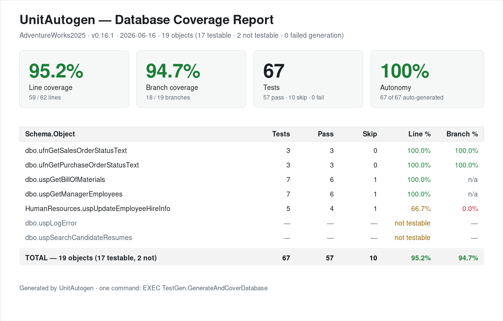
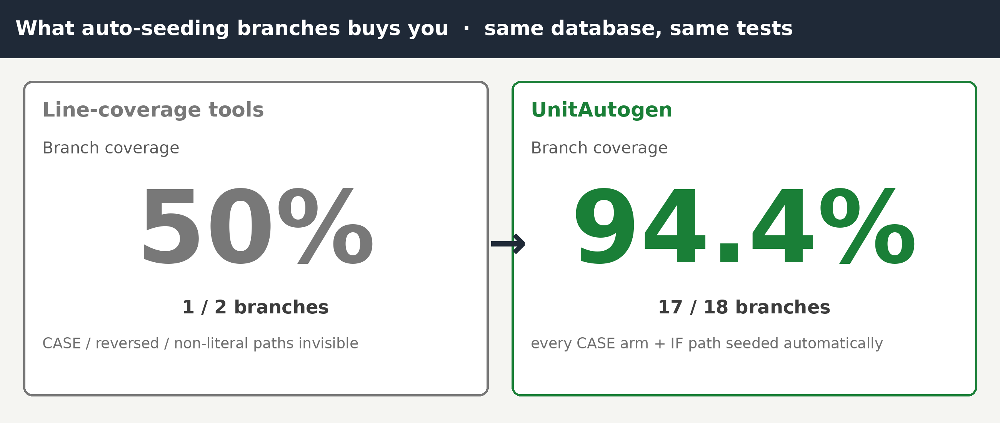
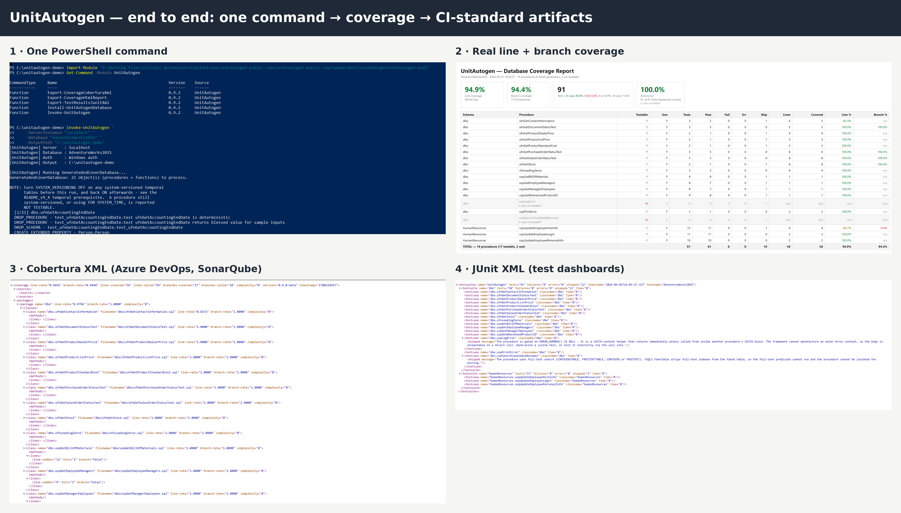

Point UnitAutogen at a stored procedure — or your whole database — and it writes the tSQLt tests, generates the data to drive every branch, runs them, and reports real line and branch coverage. The part of testing everyone skips, automated.

It’s one of the most common — and most costly — assumptions in software. QA tests
through the application, so it only ever drives your stored procedures with the inputs the
screens happen to produce. The logic inside the procedure — the error paths, the rare data
conditions, the specific branch of every IF and CASE — mostly never runs.
The application looks tested. The SQL logic underneath never was.
And that SQL is usually your most critical code. The bug that takes down production is almost always on the branch no test ever executed. The honest fix is to unit-test the procedures directly — which almost no one does, because by hand it’s brutal: fake every table, craft data for every branch. So it gets skipped.
The hard part isn’t faking the table — it’s the data. Mocking a table gives you an empty table, so a branch that needs matching rows only ever runs its “no rows” side. UnitAutogen reads each predicate in the procedure and works backwards from it — reverse predicate-based data seeding — to build the rows that drive that branch both ways.
-- a gate inside your procedure:
IF (SELECT COUNT(*) FROM Sales.Orders WHERE CustomerID = @CustomerID) > 5
-- ... high-value customerIt generates one setup with 6 matching orders (so the > 5 branch runs)
and one with fewer (so the other branch runs) — and asserts the data actually drove the condition the
intended way, so a wrong guess fails loudly instead of passing at the wrong coverage.

On Microsoft’s AdventureWorks sample database, the same tests that reach only about 50% branch coverage without seeded data reach ~94% once UnitAutogen fills in the rows that exercise each branch — with no hand-written setup.
It doesn’t stop at one procedure. Point it at the database and it generates and runs tests across every procedure and function, then exports the results as standard Cobertura and JUnit XML — so the coverage check drops into your existing pipeline and every build verifies the SQL logic is tested, not just the app on top of it.
One command generates, runs, and measures coverage across every testable procedure and function.
Cobertura + JUnit + HTML output for Azure DevOps, GitHub Actions, Jenkins, GitLab, and SonarQube.
What it can’t test — temporal, full-text, memory-optimized tables — is flagged NOT_TESTABLE with the reason, never faked into a green pass.

Built on the open-source tSQLt framework. Install the module from the PowerShell Gallery, or run the SQL scripts in SSMS.
# PowerShell / CI
Install-Module UnitAutogen
Install-UnitAutogenDatabase -ServerInstance <srv> -Database <db>
Invoke-UnitAutogen -ServerInstance <srv> -Database <db> -OutputPath ./artifactsPrefer SSMS? Open and run the two install scripts from the repo,
then EXEC TestGen.GenerateAndCoverDatabase.